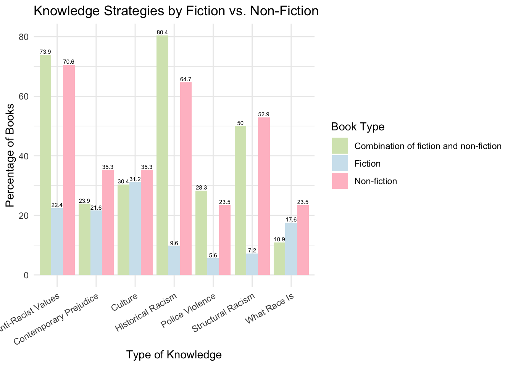

Basic Visualization for Book Coding Project Part 2
Allison Li
This is a continued project from portfolio 6. I would like to focus on some analysis for a book coding project. This book coding project is an exploratory study that codes and examines how race/ethnicity is depicted in children’s books about race. By investigating both representation of diversity, types of intergroup contacts, acquired information about race and culture, and intergroup bias reduction strategies, this project aims to understand how the present books talks about diversity and build the first step for future studies to investigate whether certain strategy is more effective in media for bias reduction. One thing I would like to note is that these dataset are from Dr. Katharine Scott, me and Sophie Boyld’s project, and some of the codes are already written by Dr. Scott, which are identified in portfolio 6.
library(readxl)
library(tidyverse)
library(writexl)
library(irrCAC)
library(irr)
library(lme4)
library(mclogit)
library(effectsize)
library(car)
library(dplyr)
library(effects)
library(ggplot2)
dWide = read_excel("~/Downloads/charactersWideDataFrameClean (1).xlsx")
dLong = read_excel("~/Downloads/charactersLongDataFrameClean (1).xlsx")
interventions = read_excel("~/Downloads/Final Intervention Codes (2).xlsx")
Comparison = read_excel("~/Downloads/Character_Compare.xlsx")Some randome exploratory questions
all seven types of knowledge acquisition grouped by temporal setting
##First i would need to merge the two dataset to have temporal setting and strategies in one dataset
d_temporal <- dWide %>%
dplyr::select(book, temporalSetting)
knowledge_vars <- c("contempPrej", "historicalPrej", "knowRace",
"knowCulture", "antiRacism", "structuralRacism", "policeViolence")
d_strategies <- interventions %>%
dplyr::select(book, all_of(knowledge_vars))
intertemp <- left_join(d_strategies, d_temporal, by = "book")
knowledge_vars <- c("contempPrej", "historicalPrej", "knowRace",
"knowCulture", "antiRacism", "structuralRacism", "policeViolence")
knowledge_by_temporal <- intertemp %>%
dplyr::select(temporalSetting, all_of(knowledge_vars)) %>%
pivot_longer(cols = all_of(knowledge_vars),
names_to = "KnowledgeType",
values_to = "Present") %>%
filter(!is.na(temporalSetting), !is.na(1)) %>%
group_by(temporalSetting, KnowledgeType) %>%
summarise(Percent = round(mean(Present == 1) * 100, 1), .groups = "drop")
knowledge_by_temporal$KnowledgeType <- dplyr::recode(knowledge_by_temporal$KnowledgeType,
"contempPrej" = "Contemporary Prejudice",
"historicalPrej" = "Historical Racism",
"knowRace" = "What Race Is",
"knowCulture" = "Culture",
"antiRacism" = "Anti-Racist Values",
"structuralRacism" = "Structural Racism",
"policeViolence" = "Police Violence")
ggplot(knowledge_by_temporal, aes(x = KnowledgeType, y = Percent, fill = temporalSetting)) +
geom_bar(stat = "identity", position = position_dodge()) +
labs(title = "Knowledge Strategies by Temporal Setting",
x = "Type of Knowledge",
y = "Percentage of Books",
fill = "Temporal Setting") +
theme_minimal() +
scale_fill_manual(values = c("Contemporary (current day)" = "#ffcbe1", "Contemporary (current day),Historical" = "#d6e5bd", "Fantastical/non-human" = "#bcd8ec", "Historical" = "#dcccec")) +
theme(axis.text.x = element_text(angle = 30, hjust = 1)) +
geom_text(aes(label = paste0(Percent)),
position = position_dodge(width = 0.9),
vjust = -0.3, size = 2)
Based on the graph, we can see that for contemporary setting, information about culture is most mentioned, with police violence and structure racism least mentioned. For combination of contemporary and historical contexts, most of the information are mentioned. More specifically, Historical Racism is most mentioned, followed by anti-racist value and structureal racism. For Fantastical or non-human settings, it seems like anti-racist value, contemporary prejudice, structural racism, and what is race is relatively equally mentioned. Lastly, in the historical setting, police violence is most mentioned, which is expected. Additionally, what race is is least mentioned, since these books might be focusing more on the experiences of racial minority individuals rather than explaining.
all seven types of knowledge acquisition grouped by fiction vs non-fiction
d_fiction <- dWide %>%
dplyr::select(book, fiction)
interfic <- left_join(d_strategies, d_fiction, by = "book")
knowledge_by_fiction <- interfic %>%
dplyr::select(fiction, all_of(knowledge_vars)) %>%
pivot_longer(cols = all_of(knowledge_vars),
names_to = "KnowledgeType",
values_to = "Present") %>%
filter(!is.na(fiction), !is.na(Present)) %>%
group_by(fiction, KnowledgeType) %>%
summarise(Percent = round(mean(Present == 1) * 100, 1), .groups = "drop")
knowledge_by_fiction$KnowledgeType <- dplyr::recode(knowledge_by_fiction$KnowledgeType,
"contempPrej" = "Contemporary Prejudice",
"historicalPrej" = "Historical Racism",
"knowRace" = "What Race Is",
"knowCulture" = "Culture",
"antiRacism" = "Anti-Racist Values",
"structuralRacism" = "Structural Racism",
"policeViolence" = "Police Violence"
)
knowledge_by_fiction$fiction <- dplyr::recode(as.character(knowledge_by_fiction$fiction),
"1" = "Fiction", "0" = "Non-Fiction", "2" = "Combination of fiction and non-fiction")
ggplot(knowledge_by_fiction, aes(x = KnowledgeType, y = Percent, fill = fiction)) +
geom_bar(stat = "identity", position = position_dodge()) +
labs(title = "Knowledge Strategies by Fiction vs. Non-Fiction",
x = "Type of Knowledge",
y = "Percentage of Books",
fill = "Book Type") +
theme_minimal() +
scale_fill_manual(values = c("Fiction" = "#d0e4ee", "Non-fiction" = "pink", "Combination of fiction and non-fiction" = "#d6e5bd")) +
theme(axis.text.x = element_text(angle = 30, hjust = 1))+
geom_text(aes(label = paste0(Percent)),
position = position_dodge(width = 0.9),
vjust = -0.3, size = 2)
Based on the graph, we can see that for fiction books, information about culture is mostly mentioned, with police violence least mentioned. For combination of fiction and non-fiction, Historical Racism is most mentioned, followed by anti-racist value and structureal racism. For non-fiction boooks, it seems like anti-racist value is most mentioned, followed by historical racism and structural racism. what race is and police violence seemed to be least mentioned.
What types of knowledge tend to co-occur?
library(corrplot)
knowledge_vars <- c("contempPrej", "historicalPrej", "knowRace",
"knowCulture", "antiRacism", "structuralRacism", "policeViolence")
knowledge_matrix <- interventions %>%
dplyr::select(all_of(knowledge_vars))
cor_matrix <- cor(knowledge_matrix, use = "pairwise.complete.obs")
#plot!
corrplot(cor_matrix, method = "color", type = "upper", tl.col = "black", tl.srt = 45)
Based on the map, it seems like structural racism tends to co-occur with historical racism (the strongest correlation). Additionally, anti-racist value is positively related with presence of historical racism, as well as with police violence. I believe books that depicting historical racism and police violence’s ultimate goal is to promote anti-racist value, so they tend to co-occur. Interestingly, knowledge about race and culture tend not to occur together, which makes sense since one book might want to focus on educating one major theme.
Do historical books focus more on structural issues while contemporary books promote personal values?
## To answer this question, I see structuralRacism, historicalPrej, and policeViolence to be structural issues, while antiRacism, emotionsPT, emotionsPT2, emotionsDiscrim, emotionsBasic more aligning with personal values.
knowpt_vars <- c("contempPrej", "historicalPrej", "knowRace", "knowCulture", "antiRacism", "structuralRacism", "policeViolence", "emotionsPT", "emotionsPT2", "emotionsDiscrim")
d_strategies <- interventions %>%
dplyr::select(book, all_of(knowpt_vars))
intertemp <- left_join(d_strategies, d_temporal, by = "book")
vars_to_compare <- c("historicalPrej", "contempPrej", "antiRacism", "emotionsPT", "emotionsPT2", "emotionsDiscrim", "structuralRacism")
setting_comparison <- intertemp %>%
dplyr::select(temporalSetting, all_of(vars_to_compare)) %>%
pivot_longer(cols = -temporalSetting, names_to = "Type", values_to = "Present") %>%
filter(!is.na(Present)) %>%
group_by(temporalSetting, Type) %>%
summarise(Percent = round(mean(Present == 1) * 100, 1), .groups = "drop")
setting_comparison$Type <- dplyr::recode(setting_comparison$Type,
"structuralRacism" = "Structural Racism",
"antiRacism" = "Anti-Racist Values",
"emotionsPT" = "Perspective Taking (implicit)",
"emotionsPT2" = "Perspective Taking (explicit)",
"emotionsDiscrim" = "Emotion from Discrimination"
)
ggplot(setting_comparison, aes(x = Type, y = Percent, fill = temporalSetting)) +
geom_bar(stat = "identity", position = position_dodge()) +
labs(title = "Structural vs. Personal Emphases by Temporal Setting",
x = "Knowledge or Emotional Strategy",
y = "Percentage of Books",
fill = "Temporal Setting") +
theme_minimal() +
theme(axis.text.x = element_text(angle = 30, hjust = 1)) +
scale_fill_manual(values = c("Contemporary (current day)" = "#ffcbe1", "Contemporary (current day),Historical" = "#d6e5bd", "Fantastical/non-human" = "#bcd8ec", "Historical" = "#dcccec"))
Based on the results, historical books also seem to have the highest rates of structural racism and historical prejudice, which aligns with the structural/systemic focus hypothesis. For the contemporary books, it looks like they show lower emphasis on structural or historical issues. However, they are moderate or even relatively low on personal-level emotional content, such as perspective taking and discrimination-related emotion. Therefore, the result did not really align with my expectation. Historical books did show greater emphasis on structural racism and historical content, but contemporary books did not show much emphasis on emotional or personal learning neither.
Is the racial background of the author associated with the themes emphasized in their books?
dWide <- dWide %>%
mutate(authorRaceGroup = case_when(
authorRace == "White" ~ "White",
is.na(authorRace) ~ NA_character_,
TRUE ~ "BIPOC or Multiracial"
))
knowpt_vars <- c("contempPrej", "historicalPrej", "knowRace", "knowCulture", "antiRacism", "structuralRacism", "policeViolence", "emotionsPT", "emotionsPT2", "emotionsDiscrim")
d_author <- dWide %>%
dplyr::select(book, authorRaceGroup)
d_strategies <- interventions %>%
dplyr::select(book,all_of(knowpt_vars))
authorstrat <- left_join(d_strategies, d_author, by = "book")
knowledge_vars <- c("contempPrej", "historicalPrej", "knowRace",
"knowCulture", "antiRacism", "structuralRacism", "policeViolence")
author_race_comparison <- authorstrat %>%
filter(!is.na(authorRaceGroup)) %>%
dplyr::select(authorRaceGroup, all_of(knowledge_vars)) %>%
pivot_longer(cols = all_of(knowledge_vars), names_to = "Strategy", values_to = "Present") %>%
group_by(authorRaceGroup, Strategy) %>%
summarise(Percent = round(mean(Present == 1, na.rm = TRUE) * 100, 1), .groups = "drop")
author_race_comparison$Strategy <- dplyr::recode(author_race_comparison$Strategy,
"contempPrej" = "Contemporary Prejudice",
"historicalPrej" = "Historical Racism",
"knowRace" = "What Race Is",
"knowCulture" = "Culture",
"antiRacism" = "Anti-Racist Values",
"structuralRacism" = "Structural Racism",
"policeViolence" = "Police Violence"
)
ggplot(author_race_comparison, aes(x = Strategy, y = Percent, fill = authorRaceGroup)) +
geom_bar(stat = "identity", position = position_dodge()) +
labs(title = "Knowledge Strategies by Author Race",
x = "Knowledge Theme",
y = "Percentage of Books",
fill = "Author Race") +
theme_minimal() +
scale_fill_manual(values = c("White" = "#d0e4ee", "BIPOC or Multiracial" = "#ffcbe1")) +
theme(axis.text.x = element_text(angle = 30, hjust = 1))
Based on the graph, we can see that for what is culture and anti-racist value, there is a huge gap, with people of color creative team having mentioning more about these two knowledge than white authors. For knowledge about what race is and police violence, these two themes are more likely to be mentioned by white creative teams.
Word Cloud
# Install required packages
##install.packages(c("tm", "wordcloud", "RColorBrewer"))
library(tidyverse)
library(tm)## Loading required package: NLP##
## Attaching package: 'NLP'## The following object is masked from 'package:ggplot2':
##
## annotate##
## Attaching package: 'tm'## The following object is masked from 'package:lavaan':
##
## inspectlibrary(wordcloud)## Loading required package: RColorBrewerlibrary(RColorBrewer)
# Text preprocessing
corpus <- Corpus(VectorSource(dWide$book))
corpus_clean <- corpus %>%
tm_map(content_transformer(tolower)) %>%
tm_map(removePunctuation) %>%
tm_map(removeNumbers) %>%
tm_map(removeWords, stopwords("english")) %>%
tm_map(stripWhitespace)## Warning in tm_map.SimpleCorpus(., content_transformer(tolower)): transformation
## drops documents## Warning in tm_map.SimpleCorpus(., removePunctuation): transformation drops
## documents## Warning in tm_map.SimpleCorpus(., removeNumbers): transformation drops
## documents## Warning in tm_map.SimpleCorpus(., removeWords, stopwords("english")):
## transformation drops documents## Warning in tm_map.SimpleCorpus(., stripWhitespace): transformation drops
## documents# Create term-document matrix
tdm <- TermDocumentMatrix(corpus_clean)
tdm_matrix <- as.matrix(tdm)
# Calculate word frequencies
word_freqs <- sort(rowSums(tdm_matrix), decreasing = TRUE)
word_data <- data.frame(word = names(word_freqs), freq = word_freqs)
# Generate word cloud
set.seed(123)
wordcloud(words = word_data$word,
freq = word_data$freq,
min.freq = 2,
max.words = 100,
random.order = FALSE,
colors = brewer.pal(8, "Dark2"))
Having black the most in the title is not surprising. I think including the race/ethnicity in the book title is important since parents would definetly like to know what this book is about when simply looking at a book’s title. For the words such as skin, different, color, hair, brown, face, mixed, I think they tend to emphasize the physical traits that might help normalize difference and promote equality, especially regarding natural Black hair and diverse skin tones. There are also words such as love, beautiful, celebration, or dream, which I think is promoting positive emotions or affects from these books, so children would be positively embracing the content mentioned here. There are also words including history, racism, freedom, luther king, which i think reflect an educational intention to teach about racial history, knowledge and social justice. In general, I believe this word cloud reveals a set of books that including themes such as: affirming Black identity, celebrating cultural difference, educating about history, and introducing concepts of justice and inequality.